Casa Stark 🐺
Senhores do Norte e governantes de Winterfell. São conhecidos por sua honra, lealdade e senso de justiça. Seu lema é: "O Inverno Está Chegando".
Game of Thrones é uma série de fantasia baseada nos livros As Crônicas de Gelo e Fogo, de George R. R. Martin. A história se passa no continente fictício de Westeros, onde diversas famílias nobres disputam o controle do Trono de Ferro, símbolo do poder sobre os Sete Reinos.
Enquanto reis e nobres travam guerras e conspirações pelo poder, uma ameaça muito maior se aproxima: os Caminhantes Brancos, criaturas antigas capazes de levantar os mortos e que podem destruir toda a humanidade.
Ao longo de oito temporadas, alianças são formadas e desfeitas, personagens importantes morrem inesperadamente e grandes batalhas mudam o destino dos reinos. No final, a disputa pelo Trono de Ferro chega ao fim, mas com consequências profundas para todos os envolvidos.
Senhores do Norte e governantes de Winterfell. São conhecidos por sua honra, lealdade e senso de justiça. Seu lema é: "O Inverno Está Chegando".
A família mais rica de Westeros. Inteligentes, ambiciosos e mestres da política. Seu lema oficial é: "Ouça-me Rugir!", embora sejam mais conhecidos por "Um Lannister sempre paga suas dívidas".
Antiga família real descendente de conquistadores que dominaram Westeros com dragões. Seu lema é: "Fogo e Sangue".
Família que tomou o trono dos Targaryen após uma rebelião. Conhecidos por sua força militar e personalidade explosiva. Seu lema é: "Nossa é a Fúria".
Família que tomou o trono dos Targaryen após uma rebelião. Conhecidos por sua força militar e personalidade explosiva. Seu lema é: "Nossa é a Fúria".
Uma das famílias mais ricas e influentes do sul de Westeros. Destacam-se pela diplomacia, riqueza e alianças políticas. Seu lema é: "Crescendo Fortes".
Senhores de Dorne, região quente e árida de Westeros. Valorizam a liberdade, a honra e a independência. Seu lema é: "Insubmissos, Não Quebrados, Não Domados".
Senhores do Vale, protegidos por fortalezas praticamente impossíveis de conquistar. Valorizam honra e tradição. Seu lema é: "Tão Alto Quanto a Honra".
Tyrion Lannister é um dos personagens centrais da série de livros As Crônicas de Gelo e Fogo, de
George R. R. Martin. Filho de Tywin Lannister e irmão de Jaime e Cersei Lannister, ele nasce com
nanismo e sofre preconceito durante toda a vida, inclusive dentro da própria família.
Apesar de não ser um grande guerreiro, Tyrion se destaca por sua inteligência, seu humor
sarcástico e sua habilidade política. Ao longo da história, ele atua como conselheiro,
estrategista e sobrevivente em um mundo dominado por intrigas, guerras e disputas pelo poder.
Sua trajetória também explora temas como discriminação, identidade, família e busca por
reconhecimento.
.svg)
Exilada ainda criança, Daenerys cresce longe de Westeros e, ao longo da história, conquista aliados e lidera exércitos. Mãe de dragões, busca recuperar o Trono de Ferro e libertar pessoas escravizadas. Sua trajetória mostra tanto sua força e determinação quanto os desafios de governar e lidar com o poder.
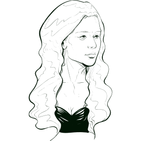
Criado em Winterfell como filho bastardo de Ned Stark, Jon escolhe entrar para a Patrulha da Noite. Lá, enfrenta ameaças além da Muralha e assume responsabilidades de liderança. Sua história é marcada pelo senso de dever, pela lealdade e pela luta para proteger os povos dos Sete Reinos.
Filha de Ned Stark, Arya rejeita o papel tradicional esperado para uma nobre e busca aprender a lutar e decidir o próprio caminho. Separada da família durante boa parte da jornada, ela enfrenta perigos e desenvolve habilidades que a ajudam a sobreviver. Sua história destaca coragem, independência e identidade.
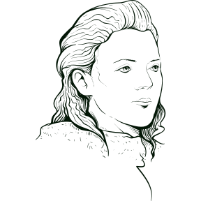
| Ator | Personagem | Tempo de Tela |
|---|---|---|
| Peter Dinklage | Tyrion Lannister | 697 minutos |
| Kit Harington | Jon Snow | 651 minutos |
| Emilia Clarke | Daenerys Targaryen | 524 minutos |
| Lena Headey | Cersei Lannister | 425 minutos |
| Sophie Turner | Sansa Stark | 418 minutos |
| Maisie Williams | Arya Stark | 393 minutos |
| Nikolaj Coster-Waldau | Jaime Lannister | 392 minutos |
| Alfie Allen | Theon Greyjoy | 261minutos |
| Conleth Hill | Varysl | 267minutos |
| Carice van Houten | Melisandre | 228minutos |
| Gwendoline Christie | Brienne de Tarth | 228minutos |
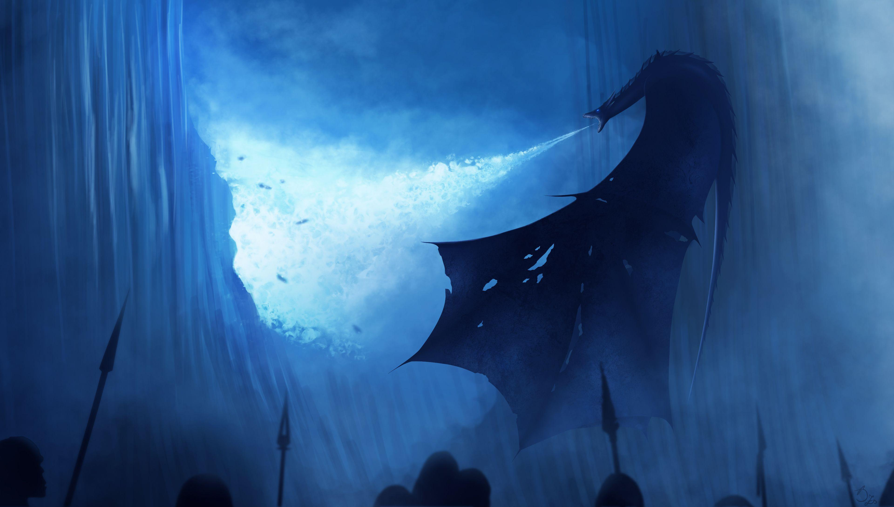
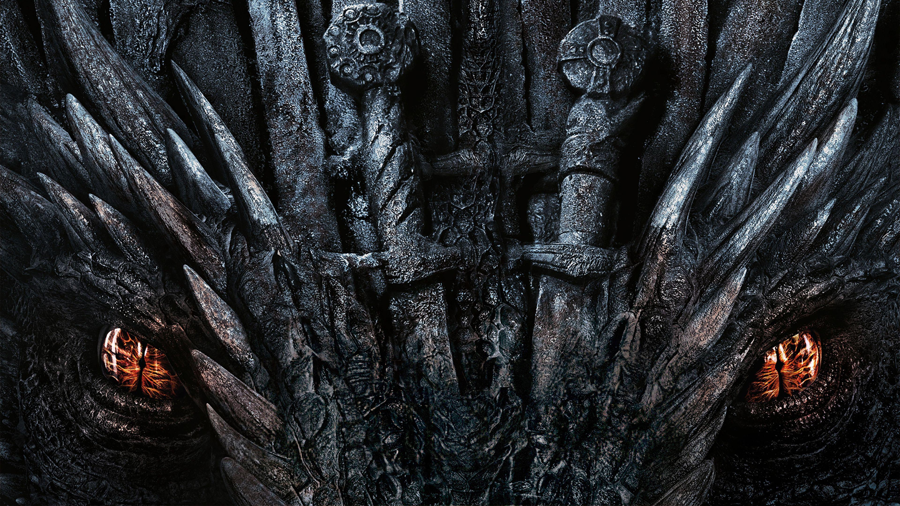
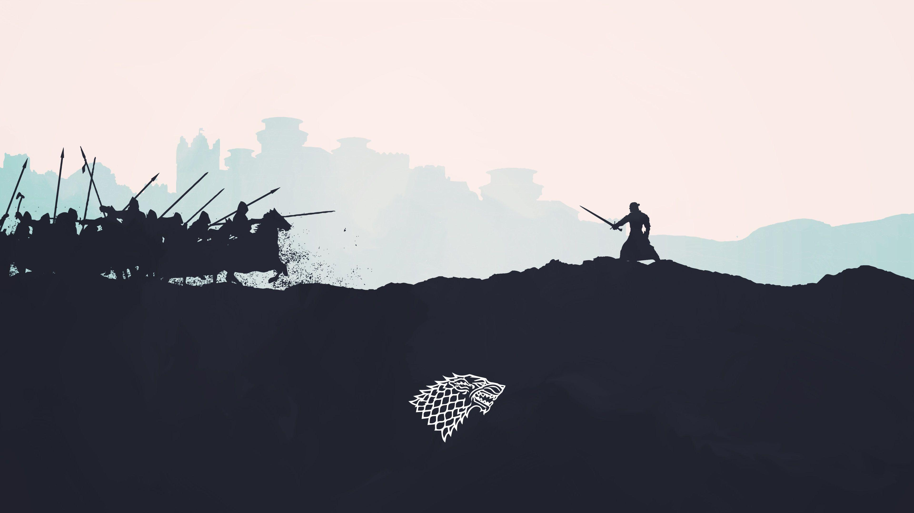
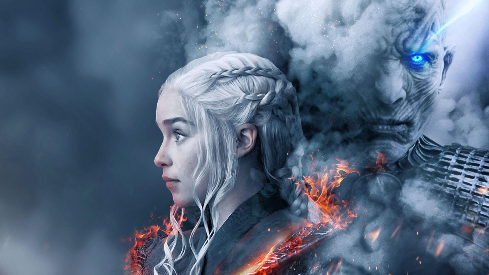
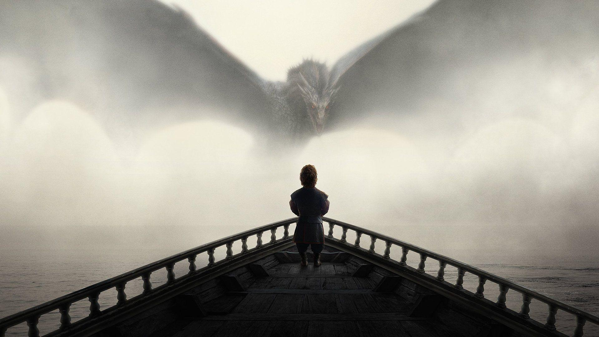
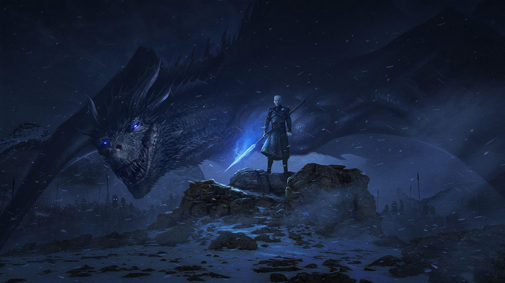
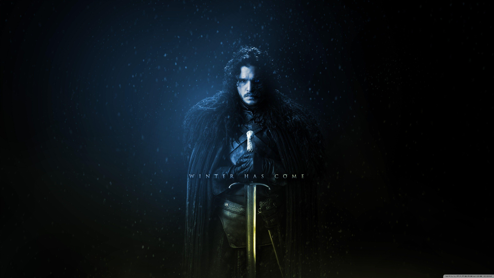
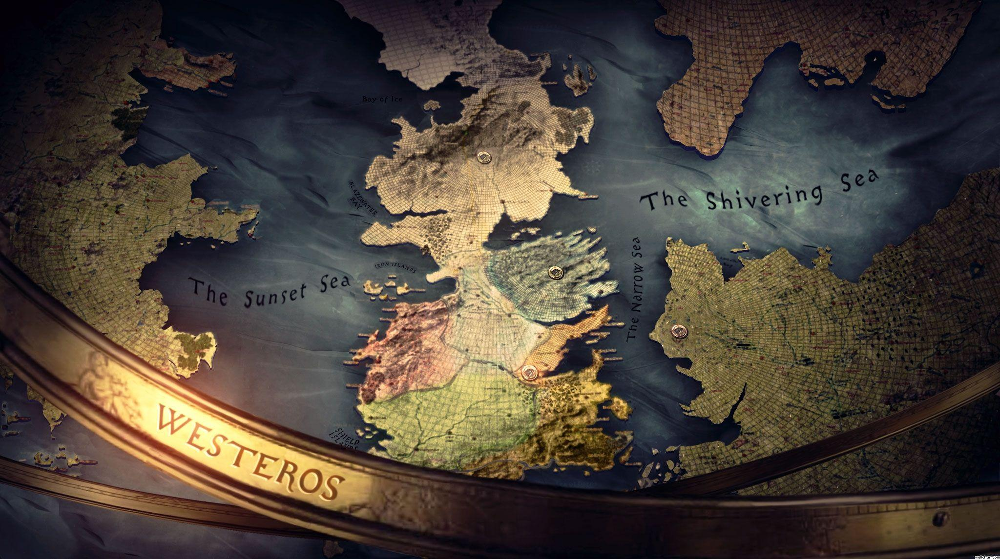
